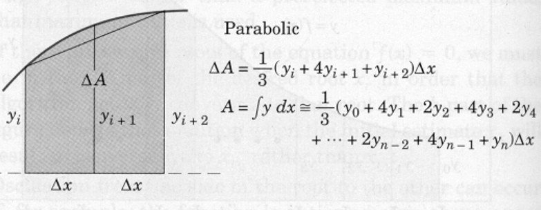

Parabolic Panels¶
Parabolic panels approximate the shape of the panel with a parabola. The area between the chord and the curve (neglected in the trapezoidal solution) may be accounted for by approximating the function with a parabola passing through the points defined by three successive values of \(y\).

This area may be calculated from the geometry of the parabola and added to the trapezoidal area of the pair of strips to give the area \(\Delta A\) of the pair as illustrated. Adding all of the \(\Delta A\)s produces the tabulation shown, which is known as Simpson’s rule. To use Simpson’s rule, the number \(n\) of strips must be even.
The same example as presented for rectangular panels is repeated, except using parabolic panels. The code is changed yet again because we will evaluate at each end of the panel as well as at an intermediate value.
# ParabolicPanels.py
# Numerical Integration
# Use built-in math functions
import math # a package of math functions
# we are naming an object "sqrt" that will compute the square root
def sqrt (x):
return math.sqrt(x)
# saves us having to type math.NAME every time we wish to use a function
# in this program not all that meaningful, but in complex programs handy!
x_low=0 #this is for JB demo only
x_high=1
how_many=4
print ("Program finds area under curve y = x * sqrt(1+x)")
# Get input data -- use error checking
yes = 1
while yes == 0:
x_low = input("Enter a lower bound x_low \n")
try:
x_low = float(x_low)
yes = 1
except:
print ("x_low really needs to be a number, try again \n")
yes = 1
while yes == 0:
x_high = input("Enter an upper bound x_high \n")
try:
x_high = float(x_high)
yes = 1
except:
print ("x_high really needs to be a number, try again \n")
yes = 1
while yes == 0:
how_many = input("Enter how many panels \n")
try:
how_many = int(how_many)
yes = 1
except:
print ("Panels really needs to be a number, try again \n")
delta_x = (x_high - x_low)/float(how_many) # compute panel width
accumulated_area = 0.0 # initial value in an accumulator
x_left = x_low # initial value for x_left edge panel
x_middle = x_left + delta_x # initial value for x_middle edge panel
x_right = x_middle + delta_x # initial value for x_right edge panel
how_many = int(how_many/2) # using 2 panels every step, so 1/2 many steps -- force integer result
for i in range(1,how_many+1,1): #note we are counting from 1
y_left = ( x_left * sqrt(1+ x_left**2) )
y_middle = ( x_middle * sqrt(1+ x_middle**2) )
y_right = ( x_right * sqrt(1+ x_right**2) )
accumulated_area = accumulated_area + \
(1./3.) * ( y_left + 4.* y_middle + y_right ) * delta_x
x_left = x_left + 2*delta_x
x_middle = x_left + delta_x
x_right = x_middle + delta_x
print ("Area under curve y = x * sqrt(1+x) from x = ",x_low,\
" to x = ",x_high,"\n is approximately: ",accumulated_area)
Program finds area under curve y = x * sqrt(1+x)
Area under curve y = x * sqrt(1+x) from x = 0 to x = 1
is approximately: 0.6094186631272838
If we study all the forms of the numerical method we observe that the numerical integration method is really the sum of function values at specific locations in the interval of interest, with each value multiplied by a specific weight.
In this development the weights were based on polynomials, but other method use different weighting functions. An extremely important method is called gaussian quadrature. This method is valuable because one can approximate convolution integrals quite effectively using quadrature routines, while the number of function evaluations for a polynomial based approximation could be hopeless.
When the function values are tabular, we are going to have to accept the rectangular (with adaptations) and trapezoidal as our best tools to approximate an integral because we don’t have any effective way to evaluate the function between the tabulated values.